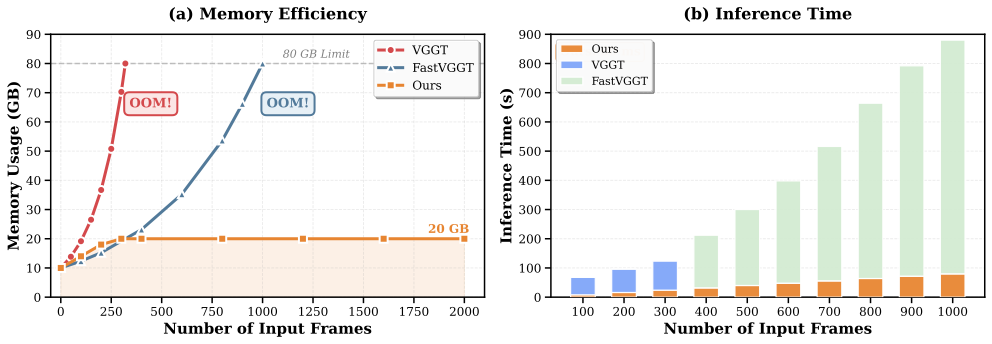

Demo
Per-frame point clouds
Frames are loaded on demand (hundreds of frames per scene, no bulk download).
Abstract
Long-sequence streaming 3D reconstruction remains a significant open challenge. Existing autoregressive models often fail when processing long sequences. They typically anchor poses to the first frame, which leads to attention decay, scale drift, and extrapolation errors. We introduce LongStream, a novel gauge-decoupled streaming visual geometry model for metric-scale scene reconstruction across thousands of frames. Our approach is threefold. First, we discard the first-frame anchor and predict keyframe-relative poses. This reformulates long-range extrapolation into a constant-difficulty local task. Second, we introduce orthogonal scale learning. This method fully disentangles geometry from scale estimation to suppress drift. Finally, we solve Transformer cache issues such as attention-sink reliance and long-term KV-cache contamination. We propose cache-consistent training combined with periodic cache refresh. This approach suppresses attention degradation over ultra-long sequences and reduces the gap between training and inference. Experiments show LongStream achieves state-of-the-art performance. It delivers stable, metric-scale reconstruction over kilometer-scale sequences at 18 FPS.
Method
Streaming architecture with gauge-decoupled pose and cache-consistent training.

Key ideas
Given streaming inputs, patch tokens are extracted by a ViT encoder and augmented with keyframe, normal-frame, and scale tokens. Tokens are fused via causal attention with a shared KV cache, which is consistently used in both training and inference for cache-consistent streaming modeling. The network predicts keyframe-relative poses Ti←k, depth, pointmap, and global scale, enabling stable metric-scale reconstruction over long sequences.
- Gauge-decoupled pose learning. Discard first-frame anchoring and predict keyframe-relative poses to keep long-horizon inference stable.
- Orthogonal metric-scale learning. Fully disentangle geometry from scale estimation to suppress drift.
- Cache-consistent training + refresh. Use cache-consistent training and periodic cache refresh to mitigate attention sink and long-term KV-cache contamination.
Attention Sink Analysis
How cache-consistent training stabilizes long-horizon streaming inference.

Results
Quantitative ATE and qualitative comparisons across long-range and small-scale benchmarks.
What to look at
- Gauge-decoupled design. Keyframe-relative poses and orthogonal scale decoupling eliminate first-frame anchor dependence and mitigate failures in long-sequence extrapolation.
- Attention sink and cache contamination. We identify them as primary causes of long-horizon degradation; cache-consistent training and periodic cache refresh stabilize temporal attention and reduce geometric drift.
- Streaming performance. State-of-the-art accuracy across indoor and outdoor benchmarks, with real-time throughput and stable metric scale on long sequences.



| Method | 00 4542f, 3.7km | 01 1101f, 2.5km | 02 4661f, 5.1km | 03 801f, 0.6km | 04 271f, 0.4km | 05 2761f, 2.2km | 06 1101f, 1.2km | 07 1101f, 0.7km | 08 4071f, 3.2km | 09 1591f, 1.7km | 10 1201f, 0.9km | Avg. |
|---|---|---|---|---|---|---|---|---|---|---|---|---|
| FastVGGT | * | 705.39 | * | 62.38 | 10.27 | 157.74 | 124.43 | 69.27 | * | 190.10 | 194.75 | 189.29 |
| MASt3R-SLAM | * | 530.37 | * | 18.87 | 88.98 | 159.430 | 92.00 | * | * | * | * | 177.93 |
| VGGT-SLAM | * | 607.16 | * | 169.83 | 13.12 | * | * | * | * | * | * | 263.37 |
| CUT3R | 185.89 | 651.52 | 296.98 | 148.06 | 22.17 | 155.61 | 132.54 | 77.03 | 238.39 | 205.94 | 193.39 | 209.78 |
| TTT3R | 190.93 | 546.84 | 218.77 | 105.28 | 11.62 | 153.12 | 132.94 | 70.95 | 180.57 | 211.01 | 133.00 | 177.73 |
| STream3R | 190.98 | 681.95 | 301.40 | 158.25 | 102.73 | 159.85 | 135.03 | 90.37 | 261.15 | 216.31 | 207.49 | 227.77 |
| StreamVGGT | 191.93 | 653.06 | 303.35 | 157.50 | 108.24 | 160.46 | 133.71 | 89.00 | 263.95 | 216.69 | 209.80 | 226.15 |
| Ours | 92.55 | 46.01 | 134.70 | 3.81 | 1.95 | 84.69 | 23.12 | 14.93 | 62.07 | 85.61 | 21.48 | 51.90 |
| Method | TUM | Oxford Spires | Waymo |
|---|---|---|---|
| FastVGGT | 0.418 | 36.577 | 1.281 |
| MASt3R-SLAM | 0.082 | 37.728 | 7.625 |
| VGGT-SLAM | 0.123 | 31.003 | 7.431 |
| CUT3R | 0.542 | 32.440 | 9.396 |
| TTT3R | 0.308 | 36.214 | 3.486 |
| STream3R | 0.633 | 37.569 | 42.203 |
| StreamVGGT | 0.627 | 37.255 | 45.101 |
| Ours | 0.076 | 19.815 | 0.737 |
| Method | Scene 01 447m | Scene 02 223m | Scene 06 270m | Scene 18 339m | Scene 20 837m | Avg. |
|---|---|---|---|---|---|---|
| FastVGGT | 3.435 | 0.311 | 0.120 | 2.050 | 101.667 | 31.427 |
| MASt3R-SLAM | 83.771 | 20.206 | 3.840 | 68.875 | 231.064 | 98.714 |
| VGGT-SLAM | 25.128 | 0.237 | 0.281 | 1.641 | 68.840 | 23.667 |
| CUT3R | 50.968 | 29.913 | 0.820 | 29.012 | 127.583 | 55.276 |
| TTT3R | 29.877 | 11.785 | 0.598 | 7.445 | 71.208 | 28.099 |
| STream3R | 68.280 | 26.450 | 8.185 | 43.597 | 198.279 | 82.815 |
| StreamVGGT | 71.616 | 15.349 | 10.274 | 23.900 | 221.407 | 83.916 |
| Ours | 1.422 | 0.185 | 0.303 | 0.683 | 4.030 | 1.610 |
BibTeX
If you find LongStream useful, please cite:
@misc{cheng2026longstreamlongsequencestreamingautoregressive,
title = {LongStream: Long-Sequence Streaming Autoregressive Visual Geometry},
author = {Chong Cheng and Xianda Chen and Tao Xie and Wei Yin and Weiqiang Ren and Qian Zhang and Xiaoyang Guo and Hao Wang},
year = {2026},
eprint = {2602.13172},
archivePrefix = {arXiv},
primaryClass = {cs.CV},
url = {https://arxiv.org/abs/2602.13172},
}